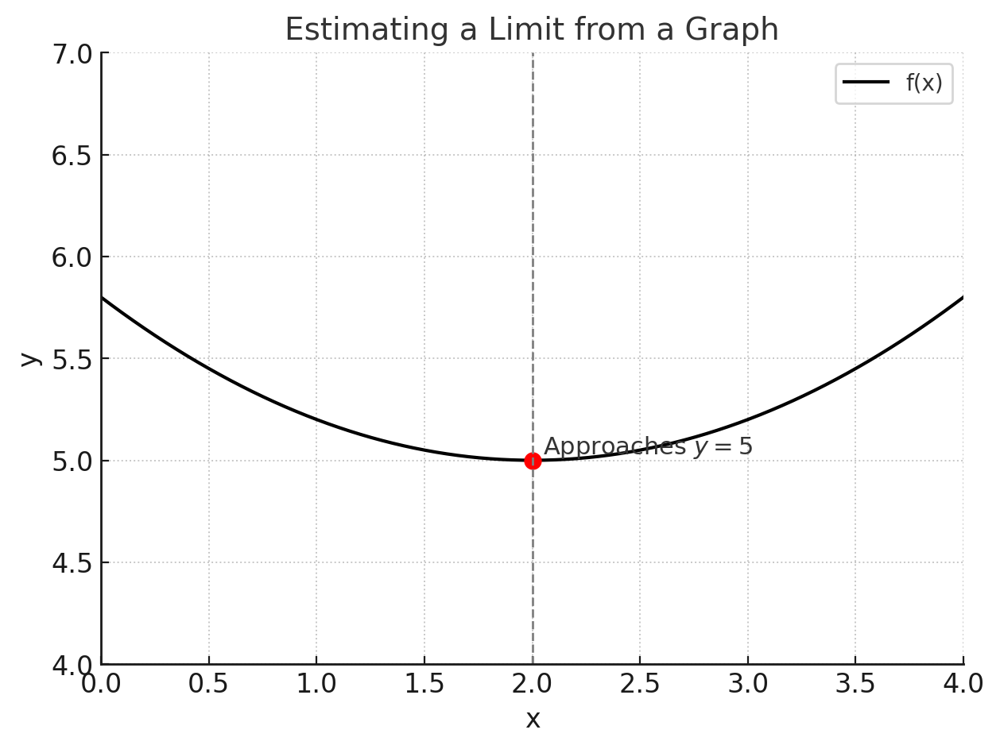

1. Evaluating Limits Graphically
Looking at the graph of a function, you can estimate a limit by observing the value \( f(x) \) approaches as \( x \) approaches a certain point.
Example: Suppose \( f(x) \) is graphed, and as \( x \to 2 \), the y-values approach 5. Then:
\[ \lim_{x \to 2} f(x) = 5 \]
Key Tips:
- Check both left-hand and right-hand approaches.
- If they approach the same value, the limit exists.
- If they approach different values, the limit does not exist (DNE).
2. One-Sided Limits
Left-hand limit: \[ \lim_{x \to a^-} f(x) \]
Right-hand limit: \[ \lim_{x \to a^+} f(x) \]
Existence Rule: The two one-sided limits must agree for the overall limit to exist.
3. Evaluating Limits Algebraically
Common strategies:
- Direct substitution.
- Factoring to cancel indeterminate forms.
- Rationalizing (conjugates).
- Special trig limits.
Example:
\[ \lim_{x \to 3} \frac{x^2 - 9}{x - 3} = 6 \]
4. Infinite Limits and Vertical Asymptotes
If \( f(x) \) increases or decreases without bound as \( x \) approaches \( a \), we write:
\[ \lim_{x \to a} f(x) = \infty \quad \text{or} \quad -\infty \]
Example:
\[ f(x) = \frac{1}{(x-2)^2}, \quad \lim_{x \to 2} f(x) = \infty \]
This indicates a vertical asymptote at \( x=2 \).
Check Yourself
\[ \lim_{x \to 0} \frac{\sin x}{x} = ? \]
\[ \lim_{x \to 1^-} \frac{1}{x-1} = ? \]
\[ \lim_{x \to 1^+} \frac{1}{x-1} = ? \]